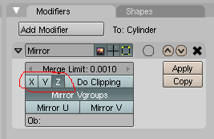

Модификаторы в Blender. Mirror – зеркальное отображение. Урок 10
Разработка урока к элективному курсу "3D-моделирование в Blender"

Что такое модификаторы? Несмотря на "загадочное" слово, под модификаторами следует понимать всего лишь инструменты для изменения объектов. Можно провести аналогию с реальным миром: кирпичи и доски — это объекты, а молотки и стамески — это инструменты. В Blender существуют достаточно большое количество модификаторов. Наиболее очевидные из них объединены в выпадающий список на вкладке Modifiers панели кнопок Editing (F9). Влияние на объект каждого модификатора достаточно своеобразно. Некоторые, представленные здесь модификаторы, предполагают влияние одного объекта на другой, другие более простые. Мы не будем рассматривать все модификаторы, а остановим выбор на Mirror (зеркало), т. к. этот инструмент является наиболее востребованным в графическом моделировании.
Следует иметь ввиду, что отнести к модификаторам можно и ранее рассмотренные нами основные способы изменения объектов: это изменение положения (G), угла поворота (R), размера (S), экструдирование, подразделение, а также булевы операции. Ведь все эти инструменты так или иначе изменяют объект.
Модификатор Mirror дублирует объект таким образом, что создается зеркальное отображение. Чтобы понять почему Mirror является таким используемым, достаточно посмотреть вокруг: мир во многом состоит из достаточно симметричных объектов: левая часть часто является отражением правой. Моделируя симметричные объекты, проще создать одну половину, а затем скопировать и отразить копию. Именно копирование и отражение выполняет инструмент Mirror. Хотя можно обойтись и без него, но чаще с ним получается быстрее.
Данный инструмент не так прост, как может показаться вначале. Мир как минимум имеет три измерения: длину, ширину и высоту и соответствующие им оси X, Y и Z. При отражении по разным осям получаются совершенно разные результаты.

Помимо оси отражения (а точнее плоскости) важное значение имеет то, где находится центральная точка объекта. Отражение происходит относительно центральной точки. Когда объект только создан, то, скорее всего, его центральная точка находится в его центре. Представьте себе куб, центральная точка которого находится как раз в его центре. По какой бы оси вы его не отражали, отражение всегда совпадет с оригиналом. Но если переместить центральную точку на поверхность куба, то при отражении по соответствующей оси мы получим как бы два кубика, слитых воедино.
Для смещения центральной точки объекта можно воспользоваться кнопкой Center Cursor, расположенной на вкладке Mesh панели кнопок Editing (F9). Предварительно нужно выделить объект и с помощью 3D-курсора (он перемещается щелчком левой кнопки мыши в 3D-окне) указать желаемое положение центральной точки объекта.

Рассмотрим в действии инструмент Mirror на примере, моделирования гантели. Гантель это очень простой с точки зрения 3D-моделирования объект. Можно сказать, что гантель состоит из цилиндра и пары сфер. Ее легко смоделировать без применения каких-либо модификаторов. Однако, как мы это потом увидим, редактировать длину гантели будет удобнее, если изначально был применен инструмент Mirror. Итак приступим.
- Работать будем, переключившись на вид спереди (NumLock 1).
- Добавляем на сцену цилиндр и немного уменьшаем его по всем осям. Затем на глазок вытягиваем его по оси Z. При этом следует иметь ввиду, что это лишь половина гантели, поэтому сильно вытягивать не стоит.
- Добавляем на сцену сферу и, возможно, также уменьшаем ее по всем осям. Располагаем на верхней границе цилиндра таким образом, чтобы она слегка перекрывала верхнюю поверхность последнего.
- Далее объединяем сферу и цилиндр (Ctrl + J).
- После этого из списка Add Modifier вкладки Modifiers выбираем модификатор Mirror.
- Применив модификатор, мы не увидим результата. Дело в том, что отражение произошло по оси X. Однако нам надо — по Z. Следовательно в настройках модификатора следует выключить кнопку X и включить кнопку Z.
 - После этого внизу появится зеркальное отражение верха. Однако и тут что-то не так: длина ручки не удвоилась. Вспомним, что отражение происходит относительно центральной точки объекта, а она у нас в центре цилиндра. Поэтому цилиндр-отражение совпал с цилиндром-оригиналом.
- Если переместить 3D-курсор чуть ниже центральной точки и нажать кнопку Center Cursor, то длина ручки увеличиться.
- Смещая центральную точку объекта, можно легко регулировать положение отражения. Если бы для моделирования гантели мы использовали просто цилиндр и пару сфер, то изменить длину гантели было бы сложнее.
- В конце можно переключиться на вид из камеры и повернуть объект, если требуется.
практическая работа
- Создайте модель гантели по предложенному выше описанию.
- Самостоятельно придумайте модель, для создания которой уместно использовать инструмент Mirror.